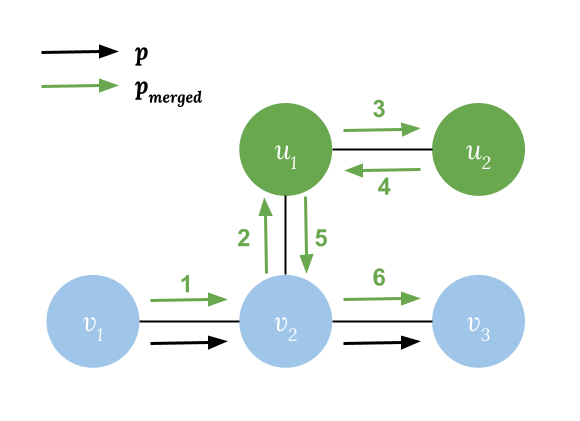
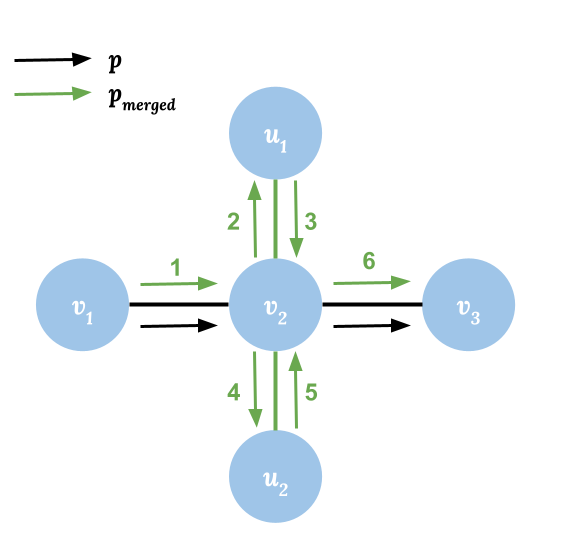

Let's start by treating the city as a graph, where nodes represent bus stops,
edges represent bus routes, and a label on each edge represents the club cheered
on by the bus route driver.
There is a key observation for this problem: if two nodes $$$\mathbf{P_j}$$$ and $$$\mathbf{C_j}$$$ are
connected, we would be able to traverse all the edges in the connected
component in the path from $$$\mathbf{P_j}$$$ to $$$\mathbf{C_j}$$$. The proof for this observation is
provided at the end of this analysis. With this
observation, we can find that if the total number of distinct edge clubs in
this connected component is odd, there is always a path from $$$\mathbf{P_j}$$$ to $$$\mathbf{C_j}$$$
that can walk on an odd number of clubs by traversing all the edges in the
connected component at least once.
Therefore, for each query, we can check if there exists a
subgraph
that satisfies:
$$$\mathbf{P_j}$$$ and $$$\mathbf{C_j}$$$ are connected.
There is an odd number of distinct edge clubs in the connected component
that contains $$$\mathbf{P_j}$$$ and $$$\mathbf{C_j}$$$.
Test Set 1
Since the number of distinct clubs $$$\mathbf{K}$$$ is small in Test Set 1, we can
enumerate all combinations of an odd number of distinct clubs. For each
combination, build a new graph $$$G'$$$ by removing edges with clubs not in
the combination. Afterwards, for each query we can check if $$$\mathbf{P_j}$$$and $$$\mathbf{C_j}$$$ are
connected in any $$$G'$$$, and if there is an odd number of edge clubs in the
corresponding connected component by iterating through all the edges in the
connected component.
We can use
Disjoint Set Union (DSU)
to find the connected componnets in $$$G'$$$ and all the nodes and edges in
them. A connected component has edge club $$$c$$$ if and only if $$$u$$$ and $$$v$$$ are
in this component (in the same set in DSU) and the edge $$$(u, v)$$$ has club
$$$c$$$. We can prebuild the DSU for all $$$G'$$$s and find the number of
distinct clubs for each of the connected component in them. For each
query, we can iterate through all prebuilt DSUs and check if $$$\mathbf{P_j}$$$ and $$$\mathbf{C_j}$$$
are connected in a component with odd number of edge clubs in it.
Space complexity:
There are at most $$$2^\mathbf{K}$$$ $$$G'$$$s, and each graph has at most $$$\mathbf{N}$$$
connected components:
Disjoint Set Unions(DSUs): $$$O(2^\mathbf{K} \times \mathbf{N})$$$
Number of distinct clubs in connected components in graphs:
$$$O(2^\mathbf{K} \times \mathbf{N})$$$
Time complexity:
Build DSUs and component clubs set (number of distinct clubs):
$$$O(2^\mathbf{K} \times (\mathbf{N} + \mathbf{M}))$$$
Per query: $$$O(2^\mathbf{K})$$$ for checking all DSUs and number of
distinct clubs in the corresponding connected component.
We can improve our solution by reducing the club combinations to check: we
just need to check the original graph $$$G$$$ and all $$$G'$$$ built by
removing edges with one club. We can prove this statement by considering all
possible cases for query $$$\mathbf{P_j}$$$ and $$$\mathbf{C_j}$$$:
Let $$$\text{Clubs}(G, \mathbf{P_j}, \mathbf{C_j})$$$ be the set of distinct clubs in the
connected component containing $$$\mathbf{P_j}$$$ and $$$\mathbf{C_j}$$$ in graph $$$G$$$, and
$$$|\text{Clubs}(G, \mathbf{P_j}, \mathbf{C_j})|$$$ be the number of distinct clubs:
If $$$\mathbf{P_j}$$$ and $$$\mathbf{C_j}$$$ are not connected in $$$G$$$, there is no valid path for
this query.
If $$$\text{Clubs}(G, \mathbf{P_j}, \mathbf{C_j})$$$ has an odd number of distinct clubs
($$$|\text{Clubs}(G, \mathbf{P_j}, \mathbf{C_j})| = 2n + 1$$$), there is always a valid path
walking on an odd number of distinct clubs.
Otherwise, if there is a path from $$$\mathbf{P_j}$$$ to $$$\mathbf{C_j}$$$ composed of edges with odd
number ($$$2n + 1$$$) of distinct clubs, $$$\mathbf{P_j}$$$ and $$$\mathbf{C_j}$$$ will always be
connected after removing edges with those $$$\mathbf{K} - (2n + 1)$$$ clubs not in
that path from graph $$$G$$$. Then, let $$$G_{minimal}$$$ be graph after
removing those edges, we can find another path with an odd number of clubs by
traversing additional connected edges with two extra clubs $$$c_1$$$ and
$$$c_2$$$ where $$$c_1, c_2 \notin \text{Clubs}(G_{minimal}, \mathbf{P_j}, \mathbf{C_j})$$$ and
$$$c_1, c_2 \in \text{Clubs}(G, \mathbf{P_j}, \mathbf{C_j})$$$. Recursively, we can find a valid
path in $$$G'$$$ by removing only one club from $$$\text{Clubs}(G, \mathbf{P_j},
\mathbf{C_j})$$$. It means if there is a valid path, there is always a $$$G'$$$
where $$$|\text{Clubs}(G', \mathbf{P_j}, \mathbf{C_j})|$$$ is odd and built by removing edges of
one club.
Therefore, we just need to build the DSUs and connected components clubs sets
for the $$$\mathbf{K}+1$$$ graphs that result from removing $$$0$$$ or $$$1$$$ club from the original graph.
Space complexity:
There are $$$\mathbf{K} + 1$$$ $$$G'$$$s, and each graph has at most $$$\mathbf{N}$$$
connected components:
Test Set 2 does not require prebuilding and sharing the DSU and clubs sets
across queries. Solutions with time complexity $$$O(\mathbf{Q} \times (\mathbf{K} \times
(\mathbf{N} + \mathbf{M})))$$$ that build DSUs and clubs sets for each of the query
separately are acceptable.
Proof: Path traversing all edges in the connect component always exists
Suppose there is a path from $$$v_1$$$ to $$$v_n$$$ where
$$$p=(v_1,v_2,\dots,v_{n-1}, v_n)$$$, and let $$$\text{Nodes}(p) = \{v_1, v_2, \dots,
v_n\}$$$ to be the set of nodes visited at least once in path $$$p$$$:
Node Reachability: For any node $$$v_i \in \text{Nodes}(p)$$$, if there is a
node $$$u_m$$$ and a path from $$$v_i$$$ to $$$u_m$$$ where $$$p'=(v_i, u_1,
u_2, \dots, u_m)$$$ in the graph, there is always a path $$$p_{merged}$$$
from $$$v_1$$$ to $$$v_n$$$ where $$$\text{Nodes}(p_{merged}) = \text{Nodes}(p) \cup
\text{Nodes}(p') \supseteq \text{Nodes}(p) \cup \{u_m\}$$$. A valid path would be
$$$p_{merged}=(v_1, \dots,v_i, u_1,\dots, u_{m-1}, u_m, u_{m-1}, \dots, u_1,
v_i, v_{i+1}, \dots, v_n)$$$. Notice that we can visit same node or edge
multiple times.
Edge Reachability: For any node $$$v_i \in \text{Nodes}(p)$$$, and for edges
$$$(v_i, u_1), (v_i, u_2), \dots, (v_i, u_m)$$$ directly connect to
$$$v_i$$$, there always exists a path $$$p'_{merged}$$$ from $$$v_1$$$ to
$$$v_n$$$ which traverses all these edges at least once. A valid path would
be $$$p'_{merged}=(v_1, \dots,v_i, u_1, v_i, u_2, \dots, v_i, u_m, v_i,
v_{i+1}, \dots, v_n)$$$.
From (1), we can derive that if nodes $$$\mathbf{P}$$$ and $$$\mathbf{C}$$$ are connected, there exist
a path from $$$\mathbf{P}$$$ to $$$\mathbf{C}$$$ which visits all reachable nodes from $$$\mathbf{P}$$$ at least
once, which are all nodes in the connected component.
From (2) and (3), we can derive that if nodes $$$\mathbf{P}$$$ and $$$\mathbf{C}$$$ are connected,
there exists a path which traverses all the edges in the connected component
at least once.

Node Reachability: $$$p_{merged}$$$ visits additional nodes $$$u_1$$$ and
$$$u_2$$$, as there exists a path $$$p'=(v_2, u_1, u_2)$$$.

Edge Reachability: $$$p_{merged}$$$ visits all edges connected to $$$v_2$$$
— $$$(v_2, u_1)$$$ and $$$(v_2, u_2)$$$.